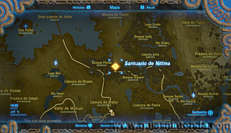
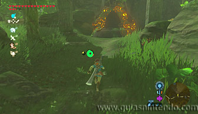
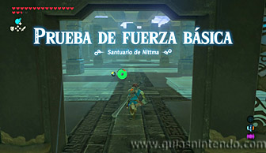
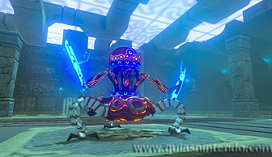
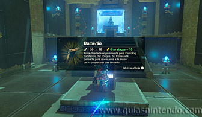

Puedes acceder a este santuario desde que llegas a la torre del lago. Está escondido en medio de un bosque, pero puedes llegar a la entrada en cualquier momento sin necesidad de hacer nada especial.

Aquí dentro deberás enfrentarte a un miniguardián 2.0.

En las escaleras de subida encuentras un cofre que contiene un Bumerán. Después examina el altar para obtener un símbolo de valía.
